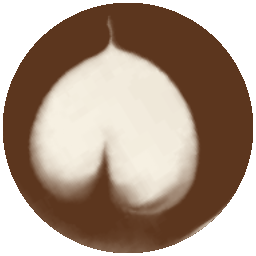

第 0 层壶模型在浏览器里实时跑：拖动壶嘴、按住倒奶，液面、堰流流量和奶柱按物理公式实时算出。杯面上的图案由同一套 2D 表层求解器（IMEX+Rusanov）在浏览器里实时算出；双击杯子看杯面 2D 图。

网格越细越慢：求解器跟不上时模型时钟自动放慢，右侧"求解网格"旁的倍率就是当前模拟速度相对实时的比例；256² 以上建议只用来回放脚本后看 2D 杯面图。最近 20 s。曲线很陡是真实的：壶里 200 mL 时 8 到 22 mL/s 只差 2° 倾角，所以流量要靠手腕微调，倒得越久要越倾斜。